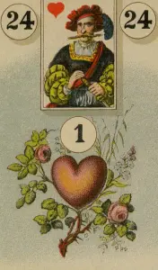
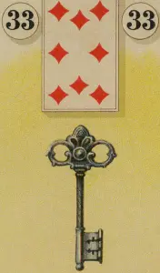
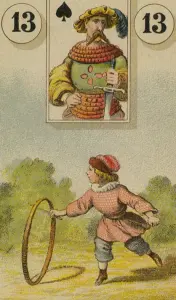

This book tells the story of a dungeon and it’s creator: YOU.
This tale has yet to be written.
In fact, you and I will be writting this story together.
To start, Do you have an idea how the dungeon is called and how it looks like?
Dungeon Name:
Description:
sound like a promising name.
You are really good at this.
I’m interested in seeing where this is going.
Of course our story will also need a hero. Any ideas?
Hero Name:
Hero Description:
always carries a amulette with them called the amulette of life. How did they obtain it again?
The Heart card has been added to your deck.
Through this story, you will obtain cards. These cards represent key characters and items.
Using a card will open up paths but will also have an effect on the character or item.
In our case the Heart Card represent both the hero and their amulette. You can play the card at any time to let survive the encounter.
However this will uncharge the amulette for a day, so keep that in mind.
also has an old friend that’s always at his side. Who are they?
Name:
Description:
Procession:
The Key card has been added to your deck.
will open up looked doors and chests for you.
The Child card has been added to your deck.
will convince any enemy, that you can be trusted.
Take good care of them!
The Beginning of a story
and wandered through the .
The paths seems to be endless, ever so twisting and turning with little to no side-branches. Non that mattered at least - they checked.
But then finally, it opened up into a big room. The room is self was quite dark. Following their own tourch light, they took on step at the time.
After what felt like an hour, the light uncovered a door at the end of the room. But at the same time, they heared a loud noise. They were not along.
Name:
Description:
A appeared out of the shadows. How do our heros proceed?
The Heart card has been activated
Please explain, how could just bearly fight of while reached the door.
By playing the heart card, somehow survived and could reach the door without any major injures, leaving the wounded behind.
The Key card has been activated
Please explain, how and where chased by .
By playing the heart card, will be able to lock the door behind them but not before getting a major wound.
Going forward, will have to care of . Hopefuly they can assist you again on the next day.
The Child card has been activated
Please explain how distracts the , while you where heading towards toe door.
By playing the child card, will convince the to let you pass, but they will get a major wound while trying to do so.
Going forward, will have to care of . Hopefuly they can assist you again on the next day.